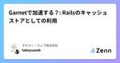
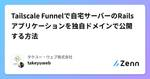

タケユー・ウェブ株式会社のフィード
https://zenn.dev/p/takeyuwebinc
Ruby on Rails や AWS が得意なWebサービス受託開発会社です。 中小規模のWebサービスの新規開発の他、他の個人開発者などから引き継いで保守運用を行ったりしています。 新規開発、お手伝いや顧問、レガシーなRailsプロジェクトの保守など、ニーズにあわせて対応でき
フィード

Garnetで加速する？: Railsのキャッシュストアとしての利用
タケユー・ウェブ株式会社のフィード
はじめにhttps://www.microsoft.com/en-us/research/blog/introducing-garnet-an-open-source-next-generation-faster-cache-store-for-accelerating-applications-and-services/Garnetは、Microsoft Researchが開発した新しいキャッシュストアシステムで、最新のハードウェア機能を十分に活用できる設計となっており、Redisなどの既存のキャッシュストアと比べて、優れたスケーラビリティと高いスループットを実現できる、とされ...
3日前

Tailscale Funnelで自宅サーバーのRailsアプリケーションを独自ドメインで公開する方法
タケユー・ウェブ株式会社のフィード
自宅サーバーで独自ドメインのWebサービスを公開するためには、ポートを開けたり、固定IPアドレスを用意するかDynamic DNSを使うか、みたいな手間が必要でした。VPNサービスであるTailscaleには、Tailscaleのネットワーク（Tailnet）上の任意のTCPポートをインターネットに向けて公開できるTailscale Funnelという機能があります。これを活用して、自宅サーバー上のRailsアプリケーションを安全かつかんたんに公開できないか？ 試してみたので、その方法をご紹介します。 この記事について 説明することTailscaleからのアクセスをRails...
10日前

DevContainer（Docker Compose）をTailnet（Tailscale）に接続するには
タケユー・ウェブ株式会社のフィード
公式のDockerで使用するガイドを参考に DevContainer をTailnetに接続できるようにしました。これにより、Tailnet内の他のデバイスから、DevContainerで起動したサービスへ接続できるようになります。なお、DevContainerからTailnet内の別のデバイスに接続したい場合は、通常ホストのIPアドレスを共有するので、ホスト側でTailnetに接続していれば、その権限で接続できるため、特別な対応は不要です。本記事は、Tailnet内の他のデバイスから、DevContainer(Dockerコンテナ)に直接アクセスさせたい場合の話です。たとえばロ...
1ヶ月前
Procfile.dev を使う場合にデバッガ（vscode-rdbg）を使う
タケユー・ウェブ株式会社のフィード
vscode-rdbg については過去の記事https://zenn.dev/takeyuwebinc/articles/50793a2313824aデバッガ起動時にrails server を実行するなら上記の記事で動くはず。tailwindcss-rails cssbundling-rails jsbundling-rails などを使用する場合、Railsアプリの起動は Procfile.dev に記載します。次のように、 Procfile.dev ではデバッガ付きで起動し、VSCodeのデバッガ起動時は attach のみ行うようにすれば動作します。 設定例Pro...
1ヶ月前
Propshaft で node_modules 内のファイルをアセットとして使う
タケユー・ウェブ株式会社のフィード
結論これから作るものについては、 node_modules を assets パスに含めようとするのはやめよう 動機importmap-rails で node_modules 以下のファイルを指定したい。config/importmap.rb の to: は asset_path で解決できるものを指定できるので、アセットパスに追加すれば使える。https://github.com/rails/importmap-rails/blob/ddf9be434e0aca1103eabafe6d34b0e8a5064057/lib/importmap/map.rb#L109h...
1ヶ月前
Rails 7.0 から 7.1 で ActiveRecord::Encryption::Errors::Decryption
タケユー・ウェブ株式会社のフィード
Rails 7.0 から 7.1 にアップグレードする際に、Active Record暗号化アルゴリズムの問題でエラーに遭遇しました。class Patient encrypts :mynumberみたいなのでhttps://railsguides.jp/upgrading_ruby_on_rails.html#active-record-暗号化アルゴリズムの変更についてに従って、バージョンアップ前の config.active_support.key_generator_hash_digest_class と同じになるよう config.active_record.encr...
2ヶ月前
Rails(Devise)でパスワード認証に加えてパスキー（WebAuthn）でもログインできるようにするステップバイステップ
タケユー・ウェブ株式会社のフィード
パスキーの普及も進んできましたね。私のWindows11でもWindows Helloを使ったりAndroid/iOS端末を使ったローミングができたりととても便利で簡単です。ニンテンドーアカウントでもパスキーによるログインが可能になりました。もちろん設定しましたよね。https://www.nintendo.co.jp/support/nintendo_account/passkey/index.htmlRailsでもパスキーを組み込む方法がいろいろと説明されています。https://techracho.bpsinc.jp/hachi8833/2023_10_19/134237...
4ヶ月前
Rails 7.1 の Dockerfile を試してみる
タケユー・ウェブ株式会社のフィード
Ruby on Rails 7.1が正式公開されたので触ってみます。https://railsguides.jp/v7.1/7_1_release_notes.html今回は、新たに rails new で作成されるようになった Dockerfile について見てみます。$ ruby -vruby 3.2.2 (2023-03-30 revision e51014f9c0) [x86_64-linux]$ gem install rails -v 7.1.1 --no-document$ rails -vRails 7.1.1$ rails new moblog$ Co...
5ヶ月前
日本語対応の全文検索エンジンMeilisearchをRuby on Railsから利用する
タケユー・ウェブ株式会社のフィード
はじめにまとめmeilisearch-rails gem があり、簡単に導入できるインデックス対象を柔軟に設定できるKaminariやPegy対応で他の検索方法との切り替えも簡単日本語での検索精度は正直用途を選びそう（v1.2）マッチしてほしいものがマッチせず、マッチしてほしくないものがマッチしないことも Meilisearchhttps://www.meilisearch.com/全文検索エンジンプログラムからはRESTful APIでアクセスして使うTypo tolerance（タイプミス耐性）に自信多言語サポートに力を入れている起動してす...
9ヶ月前
wsl --import で『エラーを特定できません Error code: Wsl/Service/E_FAIL』
タケユー・ウェブ株式会社のフィード
PS> wsl --import docker-desktop-data "C:\Users\Yuichi Takeuchi\WSL\docker-desktop-data" .\docker-desktop-data.tarインポート中です。この処理には数分かかることがあります。エラーを特定できませんError code: Wsl/Service/E_FAILエクスポートされたtarが壊れているのかと再度エクスポートし直しても再現するhttps://github.com/microsoft/WSL/issues/4735#issuecomment-1370093052...
1年前
AWS SDK for Ruby で Aurora My SQL DB クラスターのストレージ使用量を取得するには
タケユー・ウェブ株式会社のフィード
この記事では、AWS SDK for Ruby を使って Aurora MySQL DB クラスターの 現在のストレージ使用量を取得する方法 を説明します。 Aurora MySQL DB クラスターのストレージAurora MySQL DB クラスターのストレージ容量は自動拡張されます。従って、クラスターの設定から取得することはできません。（RDS MySQLであれば取得できます）https://aws.amazon.com/jp/premiumsupport/knowledge-center/view-storage-aurora-cluster/CloudWatchの V...
1年前
ActiveStorageダイレクトアップロードでファイルサイズの制限を設けるには
タケユー・ウェブ株式会社のフィード
ActiveStorageのダイレクトアップロード機能を利用すると、ブラウザから直接クラウドストレージにアップロードできるため、Railsアプリで大容量のデータを受け取ることなく、大容量ファイルのアップロードも可能です。しかしながら、無制限に受け入れていては、想定外の大容量ファイルがアップロードされてしまう可能性があります。たとえば、数MBの画像の想定のところ1TBの動画がアップロードされると困ってしまいますね。 ActiveStorageでファイル容量のバリデーションを行うにはActiveStorageのバリデーションを実装するgemはいくつかあります。https://git...
1年前
Cloudflare R2 で ActiveStorage のダイレクトアップロード機能を利用するには
タケユー・ウェブ株式会社のフィード
以前、Cloudflare R2をActiveStorageで使う方法を紹介しました。https://zenn.dev/takeyuwebinc/articles/e4d47ff381b530オープンβ当時は署名付きURLに対応していなかったため、ダイレクトアップロードは利用できませんでした。2022年9月の一般公開で署名付きURLに対応したため、ActiveStorageのダイレクトアップロード機能が使えるようになりました。バケット全体へのアクセスを許可することなく、ユーザーがファイルをアップロードまたは共有できるように、署名付きURLを作成します。https://blog...
1年前
Docker Desktop for Windows に LocalStack を組み込むには
タケユー・ウェブ株式会社のフィード
Docker Desktop の新機能 Docker Extension で LocalStack を Docker Desktop に組み込めるようになりました。https://www.itmedia.co.jp/news/articles/2301/16/news099.htmlhttps://hub.docker.com/extensions/localstack/localstack-docker-desktop LocalStackとは？LocalStackは、クラウドベースのサービスをテストするためのローカル環境を提供するオープンソースのプロジェクトです。Amazo...
1年前
Render.comでCron Jobを作成し定期タスクを実行するには
タケユー・ウェブ株式会社のフィード
Render.comは、クラウド上のWebアプリケーションのホスティングプラットフォームです。その中でも、Cron Jobは、定期的に実行するタスクを管理するための仕組みです。Cron Jobを使用することで、指定した時間や間隔で特定のスクリプトやコマンドを自動実行することができます。例えば、バックアップを毎日定時に取得したり、定期的にメールを送信するためのスクリプトを実行することができます。Render.comでは、Cron Jobを管理するためのWebインターフェイスが提供されており、簡単に設定や管理ができます。また、設定をまとめたBlueprintに記載することでコード化しデプ...
1年前
ASGのインスタンス起動・停止時にSlackに通知するCloudFormationテンプレート
タケユー・ウェブ株式会社のフィード
AWS Auto Scalingを利用することで、Amazon EC2 インスタンスを自動的に起動および停止させることでオートスケーリングやオートヒーリングを実現できます。EC2インスタンスの起動および終了をSlackに通知することで、インスタンスの入れ替えを知ったり、入れ替えが頻発するなど障害発生の検知に役立ちます。https://docs.aws.amazon.com/ja_jp/autoscaling/ec2/userguide/ec2-auto-scaling-sns-notifications.htmlこの記事では、SNSとLambdaの連携、および Lambda から ...
1年前
ActiveRecordモデルのライフサイクルにあわせてインスタンス変数の初期化などを行うには
タケユー・ウェブ株式会社のフィード
save や reload でクリアしたい重いクエリ発行などを抑制するために、インスタンス変数を使ってメモ化するのはよくある手段だと思います。まれにActiveRecordモデルの保存やreloadでクリアしたいときがあります。そんな時はこのようにdef a_slow_query return @memo if defined?(@a_slow_query) @a_slow_query = huge_processingendafter_save { remove_instance_variables! } def reload(*) super.tap...
1年前
before_validation や after_validation コールバック内で原因となった context を知る方法
タケユー・ウェブ株式会社のフィード
Railsの ActiveRecord や ActiveModel で、バリデーション前後に処理を行いたいとき、 before_validation および after_validation を使うことがあります。ActiveModelオブジェクトの親子関係があるとき、親の valid?(context) を子の valid?(context) に伝搬させたいことが稀にあります。person = Person.newperson.name = "Yuichi"person.phone = Phone.new(country_code: '+81', number: '090000...
1年前
中間モデルの属性を関連先インスタンスの属性として取り出す（ActiveRecord）
タケユー・ウェブ株式会社のフィード
たとえば、次のようなケース買い物かご Backet商品 Item買い物かごに入っている状態を表す中間モデル入っている数 quantity を中間モデルが持つこのとき、買い物かごの商品リストと数量を取り出すには、どう書けばいい？と質問がありました。class Backet < ApplicationRecord has_many :backet_items, dependent: :destroy has_many :items, through: :backet_itemendclass Item < ApplicationRecord ...
1年前
UUID主キーをActiveRecordで使う（PostgreSQL 13+）
タケユー・ウェブ株式会社のフィード
Modelでの設定は不要で、カラムがPostgreSQLのUUID型で作成されていれば扱えます。migrationの create_table の id: オプションに :uuid を渡す（create_table のドキュメント）外部キーとして参照する場合 t.references のオプションに :uuid を渡す（references のドキュメント) サンプルコードdb/migrate/20230115084803_create_backets.rbclass CreateBackets < ActiveRecord::Migration[7.0] d...
1年前